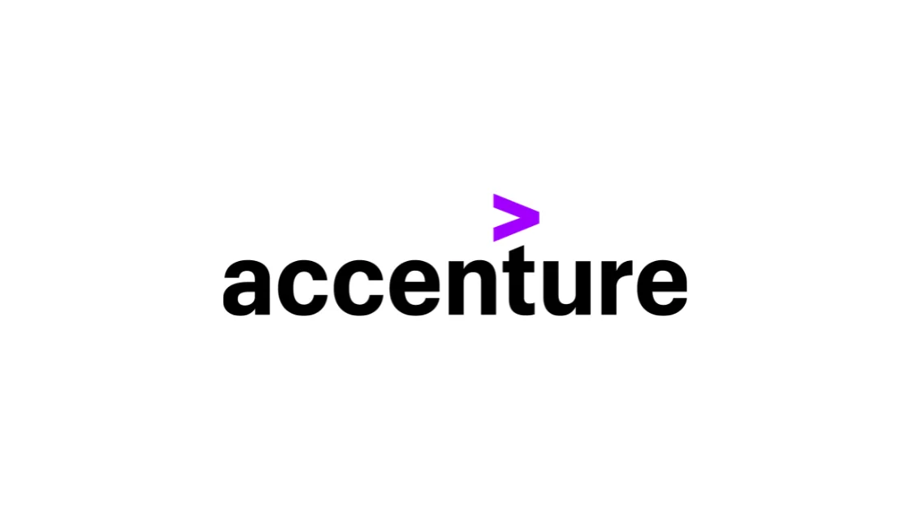

Accenture Recruitment 2022 | Junior Data Engineer
Accenture Recruitment 2022 | Junior Data Engineer | Apply Now!
Accenture has announced a job notification for the post of Junior Data Engineer. A student from various disciplines can apply for Accenture Recruitment 2022. Interested and eligible candidates can read more details below

| Accenture Recruitment 2022 | |||
|---|---|---|---|
| 1 | Company name | Accenture | |
| 2 | Post Name | Junior Data Engineer | |
| 3 | Salary | 7.0 LPA | |
| 4 | Experience | 0-2 yr | |
| 5 | Job Location | Across India | |
| 6 | Batch | 2022/21/20/19/18/17 | |
Job Description:
Accenture is hiring candidates for the post of Junior Data Engineer
Job Responsibilities:
▪︎ Create and maintain optimal data pipeline architecture
▪︎ Assemble large, complex data sets
▪︎ Build the infrastructure required for optimal extraction, transformation, and loading of data from a wide variety of data sources using relevant technologies like SQL, AWS ‘big data’
▪︎ Create data tools for analytics and data scientist team members that assist them in building and optimizing the data science driven business solutions
Eligibility Criteria:
▪︎ Graduation/post-graduation in computers/Engineering from a reputed institute.
▪︎ Have experience with databases administration, ETL
▪︎ Have experience in SQL, Python, and data prep
▪︎ Experience in supporting global clients or internal stakeholders in data science projects.
▪︎ Experience of working across multiple geographic borders and time zones
Preferred skill:
▪︎ Good spoken and written communication skills: able to deal confidently, tactfully, and appropriately with people of different disciplines and at all levels of the organization.
▪︎ Comfortable working within a large and complex environment with multiple stakeholders and interest groups
▪︎ Collaborate effectively with the rest of the team to achieve common objectives
About Accenture
Accenture is a leading global professional services company with leading capabilities in digital, cloud and security. Combining unmatched experience and specialized skills across more than 40 industries,we offer Strategy and Consulting, Interactive, Technology and Operations services – all powered by the world’s largest network of Advanced Technology and Intelligent Operations centers.
How to Apply for Accenture Recruitment 2022?
▪︎ Interested and Eligible candidates can apply for this drive online by scrolling down and clicking on Apply HERE.